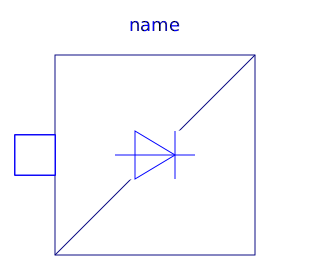
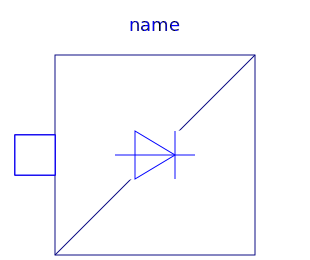
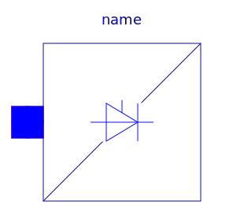
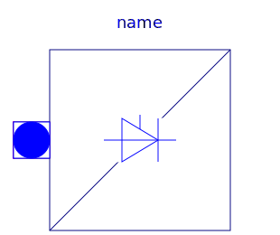
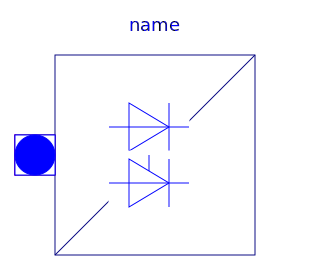
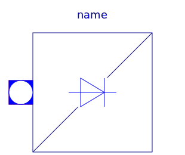

General information about AC/DC converters can be found at the AC/DC converter concept
| Name | Description |
|---|---|
| Control components for rectifiers | |
|  DiodeBridge2Pulse | Two pulse Graetz diode rectifier bridge |
| ThyristorBridge2Pulse | Two pulse Graetz thyristor rectifier bridge |
|
|
Two pulse Graetz half controlled rectifier bridge |
|  DiodeCenterTap2Pulse | Two pulse diode rectifier with center tap |
|
|
Two pulse thyristor rectifier with center tap |
| DiodeCenterTapmPulse | m pulse diode rectifier with center tap |
|  ThyristorCenterTapmPulse | m pulse thyristor rectifier with center tap |
| DiodeBridge2mPulse | 2*m pulse diode rectifier bridge |
|  ThyristorBridge2mPulse | 2*m pulse thyristor rectifier bridge |
|  HalfControlledBridge2mPulse | 2*m pulse half controlled rectifier bridge |
|  DiodeCenterTap2mPulse | 2*m pulse diode rectifier with center tap |
|
|
2*m pulse thyristor rectifier with center tap |